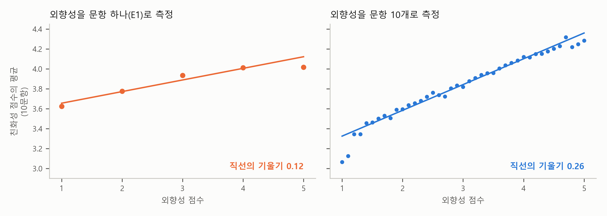

5. 관계가 약하게도, 강하게도 보인다 — 감쇠와 공통방법편향#
지금까지 이 장은 설문으로 개념 하나를 측정하는 일을 다뤘습니다. 문항 여러 개를 모으고(2절), 그 문항들이 함께 움직이는지 확인하고(3절), 함께 움직이는 문항끼리 묶으면 어떤 묶음이 나오는지 보았습니다(4절). 설문 연구는 대개 여기서 끝나지 않습니다. 그렇게 만든 척도 점수를 회귀식에 넣어, 외향성과 친화성, 직무 만족과 이직 의도처럼 개념과 개념 사이의 관계를 묻습니다. 이 절은 그 단계에서 생기는 두 가지 문제를 봅니다.
첫째는 관계가 실제보다 약하게 보이는 문제입니다. 보고서는 개념과 개념 사이의 관계를 다루지 않았으므로, 이 문제는 보고서에 나오지 않습니다. 둘째는 관계가 실제보다 강하게 보이는 문제입니다. 이 문제는 보고서 한계의 셋째 줄에 나옵니다.
같은 사람이 한 번에 50문항에 답했으므로, 답하는 버릇(무엇에나 “동의”하는 경향) 때문에 문항들이 실제보다 더 함께 움직인 것으로 보일 수 있다.
미리 답부터 말하면, 개념을 문항 하나로 거칠게 측정하면 다른 개념과의 관계가 실제보다 약하게 보입니다. 반대로 같은 사람이 같은 설문에서 답한 두 척도는, 답하는 버릇 때문에 관계가 실제보다 강하게 보일 수 있습니다.
문제 하나로 실력을 측정하면#
이번에도 시험 문제의 예로 시작합니다. 고등학교 수학 실력이 대학의 수학 성적과 얼마나 관계가 있는지 알고 싶다고 해 봅시다. 대학 수학 성적은 한 학기 성적이라 믿을 만하다고 합시다. 이에 반해 고등학교 수학 실력을 시험 한 번, 그것도 문제 하나로 측정했다면 어떤 결과가 나올까요?
문제 하나를 맞힌 학생 가운데에는 실력이 좋은 학생도 있지만 찍어서 맞힌 학생도 섞여 있습니다. 틀린 학생 가운데에도 실수로 틀린 실력 있는 학생이 있습니다. 그러니 맞힌 학생들과 틀린 학생들은 실력 차이가 크지 않습니다. 두 그룹의 대학 수학 성적을 비교해도 차이가 작게 나옵니다. 고등학교 수학 실력이 대학 수학 성적과 별 관계가 없는 것처럼 보이는 것입니다. 고등학교 실력이 대학 수학 성적과 관계가 없어서가 아니라, 실력을 거칠게 측정해서입니다. 문제를 스무 개 내서 실력을 측정하면, 찍기와 실수의 운이 상쇄되어 관계가 제 크기에 더 가깝게 드러납니다.
외향성을 문항 하나로 측정하면#
같은 일이 이 장의 자료에서도 일어납니다. 외향적인 사람일수록 친화성도 조금 높은 경향이 있는지 보려고 합니다. 친화성 점수를 종속변수로, 외향성 점수를 설명변수로 회귀분석을 했습니다. 그림 5-1의 왼쪽 패널은 외향성을 문항 하나(E1 “나는 모임의 분위기를 띄우는 사람이다”)로 측정했을 때이고, 오른쪽 패널은 외향성을 문항 10개의 척도 점수로 측정했을 때입니다. 친화성 점수는 두 패널 모두 문항 10개의 평균인 척도 점수입니다.

그림 5-1. 외향성을 문항 하나로 측정할 때(왼쪽)와 문항 10개로 측정할 때(오른쪽), 친화성 점수와의 관계. 점은 외향성 점수가 같은 사람들의 친화성 평균이다(왼쪽은 E1의 답 1 ~ 5마다, 오른쪽은 척도 점수 1.0, 1.1, …, 5.0마다).
그림에서 각 패널의 동그라미 점은 외향성 점수가 같은 사람들의 친화성 점수를 평균한 것입니다. 왼쪽 패널에는 점이 5개 있습니다. E1의 답이 1부터 5까지 다섯 가지이기 때문입니다. 예를 들어 맨 오른쪽 점은 E1에 5라고 답한 1,468명의 친화성 평균 4.02입니다. 오른쪽 패널에는 점이 41개 있습니다. 문항 10개의 평균인 척도 점수가 1.0, 1.1, …, 5.0의 41가지 값을 가지기 때문입니다. 직선은 19,718명 모두로 구한 회귀직선입니다.
두 패널을 비교하면 오른쪽 패널의 직선이 왼쪽보다 훨씬 가파릅니다. 외향성을 10문항으로 측정하면 외향성 점수가 1점 높은 사람의 친화성이 평균 0.26 높고, 문항 하나로 측정하면 0.12 높습니다. 같은 사람들, 같은 친화성 점수인데 외향성을 문항 하나로 측정했다는 이유만으로 기울기가 절반에도 못 미칩니다.
기울기가 왜 작아질까요? 3절에서 칸 하나만 보면 그 사람을 잘못 짐작할 수 있다고 했습니다. E1에 5를 준 사람 가운데에는 정말 외향적인 사람도 있지만, 외향성은 보통인데 그 문장에만 유난히 “동의”한 사람도 섞여 있습니다. 시험 문제를 찍어서 맞힌 학생과 같습니다. 그런 사람들의 친화성은 보통 수준이니, “E1에 5를 준 사람들”의 친화성 평균이 생각만큼 높지 않습니다. E1에 1을 준 사람들도 마찬가지여서, 친화성 평균이 생각만큼 낮지 않습니다. 그림에서 맨 왼쪽 점과 맨 오른쪽 점의 높이는 오른쪽 패널에서 3.06과 4.28인데, 왼쪽 패널에서는 3.62와 4.02입니다. 양쪽 끝이 가운데로 당겨지니 직선이 눕습니다.
설명변수를 이렇게 거칠게 측정해 회귀 계수가 0 쪽으로 작아지는 것을 횡단면 분석 장에서 감쇠(attenuation)라고 불렀습니다. 그 장에서는 평소 식습관 대신 어제 하루의 기록으로 소금 섭취를 측정해 혈압과의 관계가 약하게 보였습니다. 여기서는 외향성을 문항 하나로 측정해 친화성과의 관계가 약하게 보였습니다. 측정의 잡음에 관계가 묻히는 것은 같습니다.
신뢰도가 높을수록 관계가 제 크기에 가까워진다#
3절에서 본 크론바흐 \(\alpha\)가 여기서 다시 등장합니다. 측정이 거칠다는 것은 곧 신뢰도가 낮다는 것이기 때문입니다. 표 5-1은 외향성을 문항 몇 개로 측정하느냐에 따라 \(\alpha\)와 기울기가 어떻게 달라지는지를 보인 것입니다.
표 5-1. 외향성을 측정한 문항 수와 친화성을 설명하는 기울기
외향성을 측정한 문항 수 |
크론바흐 \(\alpha\) |
기울기 |
|---|---|---|
1(E1) |
— |
0.12 |
2 |
0.61 |
0.18 |
3 |
0.71 |
0.21 |
5 |
0.80 |
0.23 |
10 |
0.89 |
0.26 |
주: 50문항 모두 답한 19,718명. 종속변수는 친화성 척도 점수(10문항 평균), 설명변수는 외향성 문항 그 수만큼의 평균. 문항이 하나면 \(\alpha\)를 계산할 수 없다(문항끼리 함께 움직이는 정도로 만드는 숫자이므로). 1문항은 그림 5-1의 E1이고, 2 ~ 5문항은 그림 3-3처럼 외향성 10문항 가운데 그 수만큼 무작위로 300번 골라 평균했다.
표에서 보듯이 문항이 하나에서 10개로 늘어나는 동안 기울기는 0.12에서 0.26으로 커집니다. 문항이 2개 이상인 행에서는 \(\alpha\)도 0.61에서 0.89로 함께 올라갑니다. 문항이 많아져 운이 상쇄될수록 외향성 점수가 실제 외향성에 가까워지고, 그만큼 친화성과의 관계가 덜 약해집니다. 거꾸로 말하면, \(\alpha\)가 0.6인 척도로 측정한 변수를 회귀식에 넣으면 그 변수의 계수는 실제보다 꽤 작게 나올 수 있습니다. 신뢰도가 낮으면 척도 점수만 덜 믿을 만해지는 것이 아닙니다. 그 척도로 얻은 회귀 계수도 실제보다 작아집니다.
이것은 설문 연구를 직접 할 때 특히 기억해 둘 만합니다. 설문지가 길어지는 것이 부담스러워 개념 하나를 문항 하나나 둘로 묻는 경우가 많기 때문입니다. 그렇게 측정한 변수가 회귀분석에서 “유의하지 않다”고 나왔다면, 관계가 없어서일 수도 있지만 측정이 거칠어 관계가 작게 보였을 수도 있습니다.
참고: 4절에서 잠깐 소개한 구조방정식 모형이 설문 연구에서 널리 쓰이는 까닭 가운데 하나가 감쇠입니다. 구조방정식 모형은 척도 점수 대신 문항들 뒤의 요인을 변수로 삼아, 요인과 요인 사이의 관계를 추정합니다. 문항마다의 몫은 측정 오차로 따로 떼어 내므로, 측정 오차 때문에 계수가 작아지는 것을 바로잡을 수 있습니다. 다만 어느 문항이 어느 요인에 드는지를 정한 모형이 자료에 맞을 때에만 그렇습니다.
💡 팁: 설문으로 만든 척도를 회귀분석에 넣을 때는 AI에게 척도마다의 크론바흐 \(\alpha\)를 회귀 결과와 함께 보여 달라고 요청하세요. “회귀식에 들어간 척도 변수마다 문항 수와 크론바흐 알파를 표로 함께 보여 주고, 알파가 0.7보다 낮은 변수는 측정 오차 때문에 계수가 작게 나왔을 수 있다는 점을 한계에 적어 줘.” 문항 하나로 측정한 변수가 있다면 그 사실도 밝히게 합니다.
두 변수를 같은 설문에서 얻으면 — 공통방법편향#
이제 반대 방향의 문제입니다. 설문 연구는 대개 설명변수와 종속변수를 같은 설문지 하나에서 얻습니다. 회사 직원들에게 설문지 한 장을 돌려 직무 만족과 조직 몰입을 함께 물었다고 해 봅시다. 두 척도의 점수를 회귀분석했더니 관계가 아주 강하게 나왔습니다. 만족하는 직원일수록 몰입한다는 결론을 내려도 될까요?
조심할 점이 있습니다. 두 척도 모두 같은 사람이, 같은 시간에, 같은 설문지에서 답했습니다. 그 사람의 답하는 버릇은 두 척도 모두에 똑같이 들어갑니다. 2절에서 본 것처럼 무엇에나 약간씩 “동의” 쪽으로 답하는 사람이 있고, 회사 설문이니 좋게 보이도록 답하는 사람도 있고, 설문하던 날 기분이 좋아 모든 것을 후하게 답한 사람도 있습니다. 그런 사람은 직무 만족도 높게, 조직 몰입도 높게 답합니다. 실제 만족과 몰입이 관계가 없더라도, 답하는 버릇 하나 때문에 두 점수가 함께 움직입니다. 그래서 관계가 실제보다 강하게 보입니다.
가공의 직원 네 명으로 보겠습니다. 표 5-2의 “실제 만족”과 “실제 몰입” 열은 네 사람의 실제 값입니다. 만족이 높은 가빈과 다희 가운데 한 사람은 몰입이 높고 한 사람은 낮습니다. 만족이 낮은 나윤과 라진도 그렇습니다. 실제로는 만족과 몰입이 따로 움직이고, 상관계수는 0입니다.
표 5-2. 네 직원의 실제 값과 설문에 답한 값(가공의 예)
실제 만족 |
실제 몰입 |
답하는 버릇 |
답한 만족 |
답한 몰입 |
|
|---|---|---|---|---|---|
가빈 |
3 |
3 |
무엇에나 한 칸 높게 |
4 |
4 |
나윤 |
2 |
3 |
없음 |
2 |
3 |
다희 |
3 |
2 |
없음 |
3 |
2 |
라진 |
2 |
2 |
무엇에나 한 칸 높게 |
3 |
3 |
그런데 가빈과 라진은 무엇에나 한 칸 높게 답하는 버릇이 있습니다. 실제 만족과 몰입은 가빈이 높고 라진이 낮지만, 버릇은 같습니다. 표의 “답한 만족”과 “답한 몰입” 열이 네 사람이 설문에 답한 값입니다. 가빈은 만족과 몰입 모두 실제 값 3보다 한 칸 높은 4라고 답했고, 라진은 둘 다 실제 값 2보다 한 칸 높은 3이라고 답했습니다. 답한 값으로 계산하면 만족과 몰입의 상관계수는 0.5입니다. 실제로는 관계가 없는데, 두 사람의 버릇이 두 점수에 똑같이 들어가서 관계가 생긴 것입니다. 두 사람의 버릇이 한 칸 낮게 답하는 것이었어도 상관계수는 똑같이 0.5입니다. 관계를 만드는 것은 버릇의 방향이 아니라, 한 사람의 버릇이 두 점수에 함께 들어간다는 점입니다.
이처럼 두 변수를 같은 방법(같은 사람의 같은 설문)으로 측정해서 생기는 편향을 공통방법편향(common method bias)이라고 부릅니다. 측정이 거칠어 관계가 약하게 보이는 감쇠와 방향이 반대입니다. 감쇠는 문항마다 따로 들어간 운 때문에 생기고, 공통방법편향은 두 척도에 똑같이 들어간 버릇 때문에 생깁니다. 따로 들어간 운은 관계를 흐리고, 똑같이 들어간 버릇은 없는 관계까지 만들어 냅니다.
보고서 한계의 셋째 줄이 걱정한 것도 이것입니다. 이 장의 50문항도 같은 사람이 한 번에 답했으므로, 문항들이 함께 움직인 데에는 답하는 버릇의 몫도 조금 들어 있을 수 있습니다. 다만 이 장의 결과는 문항들이 성격별로 다섯 묶음으로 또렷이 나뉜 것이라, 모든 문항에 똑같이 들어가는 버릇만으로는 그런 모양이 나오기 어렵습니다. 공통방법편향은 서로 다른 두 개념의 관계를 물을 때 더 걱정해야 하는 문제입니다.
연구자들은 이 문제를 줄이는 방법을 대개 설문을 설계하는 단계에서 씁니다.
두 변수를 다른 출처에서 얻는다. 직무 만족은 직원에게 묻고, 성과는 상사의 평가나 실제 매출 기록에서 가져옵니다. 버릇이 두 변수에 함께 들어가지 않습니다.
두 변수를 다른 시점에 묻는다. 직무 만족은 이번 달에, 이직 의도는 석 달 뒤에 묻습니다. 그날의 기분이 두 답에 함께 들어가지 않습니다.
설문지에 버릇이 덜 들어가게 한다. 누가 답했는지 알 수 없게 하면, 좋게 보이려고 실제와 다르게 답하는 일이 줄어듭니다. 2절에서 본 것처럼 역문항을 섞으면, 무엇에나 “동의”하는 버릇이 한쪽으로 쌓이지 않습니다.
요약 — 이 절의 물음과 답
개념을 문항 하나로 측정하면 무슨 일이 생기나? 문항마다의 운이 상쇄되지 않아 측정이 거칠어지고, 그 변수의 회귀 계수가 0 쪽으로 작아진다(감쇠). 외향성을 문항 하나로 측정하면 친화성을 설명하는 기울기가 0.12로, 10문항으로 측정할 때의 0.26의 절반에도 못 미친다. 척도의 신뢰도가 높을수록 관계가 제 크기에 가까워진다.
같은 사람이 같은 설문에 답한 두 척도의 관계는 믿어도 되나? 조심해야 한다. 무엇에나 “동의”하는 버릇이나 좋게 보이려는 경향이 두 척도에 똑같이 들어가면, 관계가 없어도 두 점수가 함께 움직여 관계가 강하게 보일 수 있다(공통방법편향). 두 변수를 다른 출처나 다른 때에 측정하는 것이 가장 확실한 대책이다.
이 장을 마치며#
이제 이 장 첫머리의 보고서를 처음부터 끝까지 이해할 수 있습니다.
표 아래 주(2절): “역문항은 6에서 답을 빼서 뒤집은 뒤”와 “척도 점수는 문항 10개의 평균”은 보이지 않는 개념을 측정하는 첫 단계입니다. 답을 뒤집지 않으면 모두가 보통 사람이 됩니다.
요약 첫 줄과 셋째 줄(3절): 크론바흐 \(\alpha\) 0.79 ~ 0.89는 문항들이 함께 움직이는 정도와 문항 수가 함께 만든 숫자이고, 기준 0.7은 관행입니다. “일관되게 답했다”와 “맞게 측정했다”의 차이가 신뢰도와 타당도의 차이입니다.
요약 둘째 줄과 그림(4절): 같은 성격의 문항끼리 함께 움직여 다섯 덩어리를 이룹니다. 요인분석은 어느 문항이 어느 성격인지 모르는 채로 다섯 묶음을 찾았고, 그 묶음이 정해 둔 다섯 성격과 꼭 맞았습니다.
한계의 셋째 줄(5절): 같은 사람이 한 번에 답할 때 답하는 버릇이 문항들에 함께 들어가는 것을 걱정한 문장입니다. 이 문제는 두 척도의 관계를 물을 때 더 커집니다.
여러분이 직접 설문을 하고 분석한다면, 이 장의 순서가 그대로 분석의 순서입니다. 채점 키대로 역문항의 답을 뒤집고, 척도 점수를 만들고, 크론바흐 \(\alpha\)로 문항들이 함께 움직이는지 확인하고, 요인분석으로 문항이 생각한 대로 묶이는지 보고, 그다음에야 척도 점수를 회귀식에 넣습니다. 이 계산은 모두 AI가 금방 해 줍니다. 그러나 사람이 해야 하는 일이 셋 있습니다. 어느 문항이 역문항인지는 자료의 숫자에 적혀 있지 않습니다. 요인이 몇 개인지와 요인의 이름은 문항을 읽어 본 사람이 정합니다. 두 척도의 관계가 답하는 버릇 때문에 부풀었는지는 설문을 어떻게 했는지 아는 사람만 따질 수 있습니다.
측정은 회귀분석의 앞 단계라서 결과표에는 잘 드러나지 않습니다. 하지만 측정이 거칠면 관계는 약하게 보이고, 같은 버릇이 섞이면 강하게 보입니다. 이 장에서 가져갈 것은, 계수 하나를 믿기 전에 그 변수를 어떻게 측정했는지부터 보는 습관입니다.
AI의 보고서가 설문 척도를 쓰면, 역문항의 답을 뒤집었는지와 크론바흐 \(\alpha\)부터 본다.
직접 해 보기에서는 이 장의 분석을 파이썬 코드로 따라 해 보고, 같은 방법을 다른 척도에 적용해 봅니다.